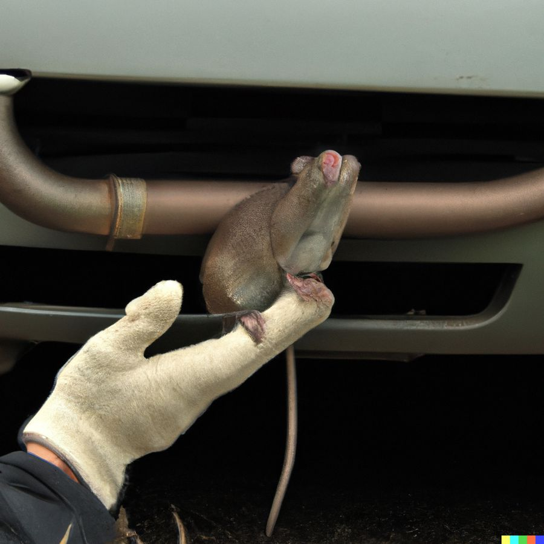

A Natural History of Vertebrates
Or how I stopped worrying and learned to love roadkill
The first two parts appeared in sobremesas, the literary magazine of UC San Diego’s Biomedical Sciences PhD program, in its Winter and Summer 2024 editions, edited by Dottie Dothard, and are reproduced here with a few small corrections. Part three appears here for the first time.

I looked on in disbelief.
In the front of the classroom, one of my classmates was holding a completely flattened squirrel by its tail.
The squirrel, from the looks of it, had been completely squashed by a large truck, possibly even an 18-wheeler. A quick survey of my classmates’ faces told me that they were quite awestruck as well, but somehow no one had the audacity to bring it to the professor’s attention that this was an insane thing for someone to be doing. It was the second day of my first upper-level biology class at Dickinson College, a class called “A Natural History of Vertebrates.”
I didn’t know it then, but the class was going to get a lot weirder from there.
For those who have never been in an undergraduate class, the expectations are usually pretty simple: You generally are graded on some combination of a few tests, quizzes, homework, and an occasional presentation. Usually there is no requirement to collect roadkill and turn it into taxidermy. “A Natural History of Vertebrates” was the rare exception. Consulting the syllabus would show you that somewhere close to 50% of your grade for the class would be determined by an evaluation of the 3 “study skins” you prepared. An amphibian, bird, and mammal were the requirements. Apparently, birds were hard to get, so in lieu of a bird you could prepare another mammal instead. The real kicker was explained to us when a student asked where we were supposed to obtain these specimens from. “There is a lot of roadkill in Carlisle, PA,” our professor explained, “especially in the warmer months.” And there it was—the primary goal of this class was to convert roadkill into taxidermy.
The Humble Frog

I had been in the class for a couple months already and my taxidermy prospects were still looking slim. Between my other coursework, running for the cross-country team, and the general desire to do anything other than picking up roadkill, I had not yet acquired any suitable specimens. Eventually, I devised a winning strategy. My plan was to make it into a team activity; I figured if I could convince a few of my buddies to come with me, it might make for a better time than going about it all alone. Group roadkill scavenging is a strange request to be sure, but what are friends for if not this? My good friends Conor and Nick answered the call of duty, so on a night in early spring we loaded up the car and headed out to the far side of the mountain. It had just rained, and that turned out to mean I was in luck: the spring rains had prompted an unbelievable number of frogs to cover the roads as they attempted to find their way to the vernal ponds.
When was the last time you saw an amphibian on the side of the road? For those of you who have never thought about it, they tend to be soft and they don’t hold up particularly well after having been struck by an automobile. After getting out of the car a couple of times and inspecting a few frog-pancake hybrids, it became clear that I was going to have to improvise. I got out of the car, picked a frog up off the side of the road, and put it into a plastic bag that was lying on the floor of my car. I would have to figure out what to do with this thing later.
On the way home, I learned my first lesson from the course: gas stations in rural Pennsylvania are not open 24/7. It was 2:00 AM, and I had so little gas that I was shifting into neutral on every downhill. After a very intense ride, we rolled back to the dorms. It was close, but we had made it.
So now the question was… what was I supposed to do with the frog? It was more alive than I had assumed it would be when starting our little expedition. There were only two options: kill the frog or let it go. Ethics 101 had not dared to tackle the advanced concept of whether it was just to kill a frog for a grade, so I was left to debate internally. After all, I thought, haven’t I been taught the importance of good grades my entire life? Perhaps this was just what biologists did—and wasn’t college supposed to be about new experiences? Besides, the pragmatist in me reasoned, if I let the frog go, I would still have to find another one later down the road. It had taken a non-insignificant amount of luck and work to get this one and I was still pretty sure there was no possible way I would happen across an already dead amphibian. What began as a crash course on ethical murder ended up being relatively straightforward calculus. It was decided—I would do what I had to do.
After the decision was made, the next question surfaced—how do you kill a frog? I wasn’t thrilled about the idea of doing this, and I certainly didn’t want it to suffer. I was also a bit squeamish, so using a knife was out of the question. It seemed that the cleanest way would be to suffocate the frog. But how to do that? My solution was nothing if not novel. Still wrapped in the plastic bag, I placed the frog in a water bottle that was lying around on the floor. To be fair, this didn’t accomplish much other than putting the frog in a sturdier vessel. It was then that the real innovation came: I brought my lips to the water bottle and sucked out all the air.
Despite the morbid nature of what I was doing I couldn’t help but be a little proud of my cleverness. I inspected my work: it was essentially a crumpled water bottle. Perhaps this wasn’t all that clever after all. I put the killing contraption in the freezer of our mini fridge for good measure. Over the next couple of hours, my roommates and I were treated to an eclectic spattering of frog croaks. Eventually, around 2:00 in the morning, there was silence. I took that to mean that my engineering had succeeded—I could deal with the rest in the morning.
Where do all the frogs go in the winter? If I had known the answer to that question, I might have done things differently. It turns out that frogs can hibernate: when the temperature gets below a certain threshold, they can drastically slow their metabolism, thereby reducing their requirement for oxygen. In fact, they can even freeze due to the high concentration of glucose in the frog’s vital organs, which prevents damage that would normally be caused by the accumulation of ice crystals. All this combined meant that my decision to put the thing in the freezer had effectively saved the frog. This became all too apparent after I removed the frog from the contraption and the frog miraculously returned to life and started hopping away. This frog had gone through more than enough. I couldn’t bring myself to make another attempt on its life. I released it back into the wild.
For all my effort, I was 0/3. What a rollercoaster. Thankfully I had a backup plan for getting another amphibian which involved some gaiters I borrowed from the basement of our biology building, a fishing net, and the cover of night. One Friday night I recruited a new squad of friends to forfeit our normal activities in order to accompany me to the closest moving body of water to campus, the LeTort Spring Run. Before long I was in the middle of the river, surrounded by a chorus of the characteristic peeps of Pseudacris crucifer, also known as the spring peeper. Before too long, I caught a peeper with the net. It was a cool looking frog. Spring peepers are in the tree frog family, so my specimen had the toe pads characteristic of the tree frogs you see in photos from the Amazon. Super cool stuff. Now all I had to do was get out of the river. One would imagine this would be an easy task, but I was finding out that nothing related to this class ever was simple. The bottom of the river was full of loose sediment that was effectively acting as quicksand. The more I moved, the deeper I sunk.
I couldn’t help but consider my situation. There I was, in the middle of a freezing cold river, in the middle of the night, holding a frog in one hand, a net in the other, all while sinking deeper and deeper. All things considered, it would have been funny if it had been happening to someone else.
The water had already begun to come over the top of the gaiters. I called out, hoping my friends would be able to help me out. They came as close as they could, trying to help from the shoreline. Unfortunately, the river was quite wide, and they were too far away to be of much assistance. I was on my own here. Eventually I opted for a brute force strategy. Now completely soaked, I half swam, half walked to the shoreline. I had the frog, now it was time to bring it back to the lab. I didn’t bother with any sort of intricate killing contraption this time, opting instead for a simpler method. I prepared a solution of formaldehyde and dropped the frog in. Before long the frog became still, and I had my first study skin. I didn’t feel great about the method of obtaining it, but I was willing to take it as a win. One down, two more to go.
The Quelled Mammal

Most people are blissfully unaware of the fact that roadkill is increasingly scarce when temperatures drop outside. Unfortunately, Punxsutawney Phil, having been very startled by his shadow on Groundhog Day of 2012, had gone back into his hole declaring that there would be much more winter to come. This was particularly tragic news from a roadkill-collecting-assignment perspective, since I had returned to campus after several specimen-scouting excursions in my 1994 Corolla without the two study skins I needed for my class.
Luckily for me, my friend and classmate John was in a similar boat as me—he still needed a mammal for a study skin. Now, John was several years older than me: at the time I was 19, while John was well into his mid-twenties, having taken a less direct path to undergrad. Unlike me though, John had a pretty good plan to get his mammal study skin and he was gracious enough to take me with him. With wisdom beyond even his years, John knew of a magical place where we could get what we needed. He was certain we would find the rodents we needed under a few plywood sheets strewn haphazardly about in an open field. I was surprised to find that the plan worked like a charm. We each caught a field mouse (otherwise known as an Apodemus sylvaticus specimen) with ease.
It was at this point that we arrived at what had become a recurring problem in my life as of late: our specimens were alive, and we needed them to be dead. But how?
This time we had two brains at our disposal to engineer a solution. We perceived our solution to be both clean and elegant, considering the situation: we planned to use carbon monoxide as a relatively peaceful method to ease the transition of the mice from “living creature” status to “mammal study skin” status. To execute the plan, John would first turn his car on, and I would follow up by holding the mouse’s face to the exhaust pipe for maximum carbon monoxide exposure. With a plan like that, a Nobel prize was surely within reach.
Believe it or not, we were never even nominated, namely because a couple of minutes into the implementation of the plan we found out our technique was flawed—we had created a very confused mouse, but not a dead one. I kept it going. 10, 15, 20 minutes—it didn’t matter—the mouse was alive and well. John suggested that we take a different approach.
John’s proposed method was less appealing than our first scheme. He was adamant that a well-placed karate chop between the vertebrae would quickly and painlessly kill the mouse. He grabbed his mouse and I watched as he hit it with a well-placed chop. It worked surprisingly well. I waited for John to dispatch the second mouse. I had just assumed that John was going to deal with my mouse for me. After all, he had just proven to be quite effective at just that. That is, until he made it clear that wasn’t how this was going to work—it was now my turn. Shakily and hesitantly, my hand came down, but it was not nearly as well executed as John’s had been. This was no fatal blow. The mouse was definitely screwed up, but it wasn’t dead yet. I then pivoted strategies and tried to compensate for the lack of quality of my blow with quantity. I wanted to put it out of its misery as quickly as possible and that seemed like the best I could do under the circumstances.
In the end, I guess it worked. Yikes—2/3.
One to go.
The Elusive Bird

It was the beginning of May. The semester was about to end, and I had two weeks left to find my last study skin. I was getting desperate. A quick look at the forecast showed perfect roadkill weather for the weekend. With any luck, I would get the final study skin I needed on Saturday.
There was the unmistakable sound of tires screeching. I looked out the driver’s side window to see another car barreling towards me. It was close now; it wasn’t going to stop in time. I instinctively braced myself, and milliseconds later the car made impact.
Suddenly time slowed to a halt. My car started spinning in a circle, propelled by the force of the other car. I remember the moment vividly. I wasn’t scared; rather, I felt as though I was standing outside of my body, watching the scene unfold in the third person. After what felt like an eternity, friction overcame the force of the impact, and my car shuddered to a halt. I was shaken but seemed to be okay. The first thing I remember thinking was: how am I going to explain this when the police show up?
The trunk of my car smelled terrible. So much so that I felt I owed the police officers who arrived at the scene an explanation. I didn’t want them to think I had a human corpse in there. As soon as I heard my explanation leave my mouth, I regretted it. I don’t remember exactly what I said, but whatever it was certainly sounded insane.
There is no neat way to explain to the police that you had picked up a dead raccoon to make into taxidermy for your roadkill class, been so disgusted by it that you were frantically driving around looking for anything else, been so distracted that you didn’t look both ways at the intersection, and then gotten T-boned on the driver’s side by a brand-new car that had driven off the lot just minutes before.
Based on the looks on their faces, they didn’t know what to make of me or my story. I assured them that Dickinson College was a real college, and eventually they must have decided it was easiest to ignore the details, let me go, and call a tow truck. Somehow, in the process, no one offered me a ride, and there I was on the far side of the mountain, a long way from Dickinson, all by myself. Thankfully I had cell service, and I called one of the few upperclassmen on my cross-country team who had a car. Forty-five minutes or so later, a group of my older teammates showed up to drive me back to campus. They didn’t quite know what to make of my story either.
As soon as I got back to my dorm, I called my mom. I needed help. I had no idea what to do in this situation. To be fair, neither did she, but she came anyway. We figured the first thing to do was find my car and collect my things. We eventually tracked it down to a junkyard a couple of miles from the accident. After a quick chat with the manager, it was clear that the most cost-effective option was to leave the car where it lay.
The manager offered to walk us out to it. As we got closer, the car began to reek. The already disgusting raccoon had been sitting in the trunk in the hot sun all day, which, as you can imagine, made it ten times worse. Having retold the story several times by now, I recited it once more to explain the overwhelming smell. Despite all my practice, it still drew a “what is wrong with you” kind of response. I collected my things, took the trash bag with the raccoon out of the trunk, and threw it deep into the woods. All this, and I still only had two of my three study skins.
I sat in the passenger seat of my mom’s minivan on the ride back to my dorm. I was upset about losing my car; I didn’t have the money to get a new one anytime soon. It was also not lost on me that sourcing roadkill was about to get much harder without a car. Even after all that had happened, I hadn’t given up. I was still worried about passing the class.
Then I looked ahead and saw a miracle. Perhaps I was going to get a study skin right here and now. Up ahead, a turkey was gobbling away in the middle of the road. There was little time to think; this was an opportunity not to be wasted. “Mom, you have to hit it!” I exclaimed.
If there is a limit to what a mother will do for her child, this wasn’t it. Even though she was clearly panicked, the van was headed right into the turkey’s path. I held my breath. We were going to get it. Then, to my shock, the turkey started to rise into the air. Up until this point in my life, I had no idea those things could fly. I tilted my head back, tracking it through the air as it narrowly cleared the roof of the van.
“I’m sorry, Charlie, I really did try,” my mom said.
In the end, one of my classmates took pity on me and gave me an extra dead squirrel they had in the freezer for some reason. That put me over the finish line: I was now 3/3. I had accomplished each of the insane tasks that A Natural History of Vertebrates had demanded of me. All it had taken was a totaled car, the lives of several innocent animals, and the support of my friends and family. For my herculean efforts, I was rewarded with an A-.